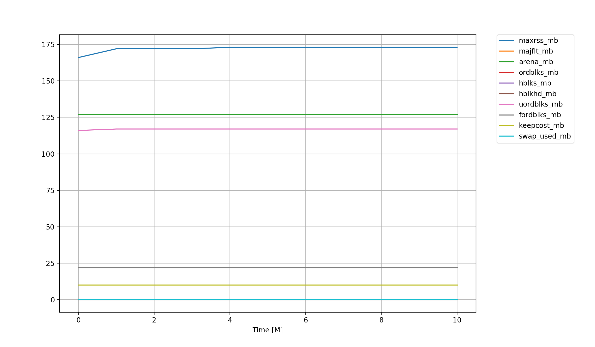

<!DOCTYPE html>
<!--[if IE 8]><html class="no-js lt-ie9" lang="en" > <![endif]-->
<!--[if gt IE 8]><!--> <html class="no-js" lang="en" > <!--<![endif]-->
<head>
  <meta charset="utf-8">
  
  <meta name="viewport" content="width=device-width, initial-scale=1.0">
  
  <title>Utility &mdash; Cactus 0.0.1 documentation</title>
  

  
  
  
  

  
  <script type="text/javascript" src="../../_static/js/modernizr.min.js"></script>
  
    
      <script type="text/javascript" id="documentation_options" data-url_root="../../" src="../../_static/documentation_options.js"></script>
        <script type="text/javascript" src="../../_static/jquery.js"></script>
        <script type="text/javascript" src="../../_static/underscore.js"></script>
        <script type="text/javascript" src="../../_static/doctools.js"></script>
        <script type="text/javascript" src="../../_static/language_data.js"></script>
        <script async="async" type="text/javascript" src="https://cdnjs.cloudflare.com/ajax/libs/mathjax/2.7.5/latest.js?config=TeX-AMS-MML_HTMLorMML"></script>
    
    <script type="text/javascript" src="../../_static/js/theme.js"></script>

    

  
  <link rel="stylesheet" href="../../_static/css/theme.css" type="text/css" />
  <link rel="stylesheet" href="../../_static/pygments.css" type="text/css" />
  <link rel="stylesheet" href="../../_static/graphviz.css" type="text/css" />
    <link rel="index" title="Index" href="../../genindex.html" />
    <link rel="search" title="Search" href="../../search.html" /> 
</head>

<body class="wy-body-for-nav">

   
  <div class="wy-grid-for-nav">
    
    <nav data-toggle="wy-nav-shift" class="wy-nav-side">
      <div class="wy-side-scroll">
        <div class="wy-side-nav-search" >
          

          
            <a href="../../index.html" class="icon icon-home"> Cactus
          

          
          </a>

          
            
            
          

          
<div role="search">
  <form id="rtd-search-form" class="wy-form" action="../../search.html" method="get">
    <input type="text" name="q" placeholder="Search docs" />
    <input type="hidden" name="check_keywords" value="yes" />
    <input type="hidden" name="area" value="default" />
  </form>
</div>

          
        </div>

        <div class="wy-menu wy-menu-vertical" data-spy="affix" role="navigation" aria-label="main navigation">
          
            
            
              
            
            
              <p class="caption"><span class="caption-text">Contents:</span></p>
<ul>
<li class="toctree-l1"><a class="reference internal" href="../GetStart.html">Get Start</a></li>
<li class="toctree-l1"><a class="reference internal" href="main.html">Thorn Guide</a></li>
<li class="toctree-l1"><a class="reference internal" href="../ThornWrite/ThornWrite.html">Thorn Write</a></li>
<li class="toctree-l1"><a class="reference internal" href="../Lorene/main.html">Lorene</a></li>
<li class="toctree-l1"><a class="reference internal" href="../Kranc/Kranc.html">Kranc</a></li>
<li class="toctree-l1"><a class="reference internal" href="../Reference.html">Reference</a></li>
</ul>

            
          
        </div>
      </div>
    </nav>

    <section data-toggle="wy-nav-shift" class="wy-nav-content-wrap">

      
      <nav class="wy-nav-top" aria-label="top navigation">
        
          <i data-toggle="wy-nav-top" class="fa fa-bars"></i>
          <a href="../../index.html">Cactus</a>
        
      </nav>


      <div class="wy-nav-content">
        
        <div class="rst-content">
        
          


<div role="navigation" aria-label="breadcrumbs navigation">

  <ul class="wy-breadcrumbs">
    
      <li><a href="../../index.html">Docs</a> &raquo;</li>
        
      <li>Utility</li>
    
    
      <li class="wy-breadcrumbs-aside">
        
            
            <a href="../../_sources/note/Guide/Utils.rst.txt" rel="nofollow"> View page source</a>
          
        
      </li>
    
  </ul>

  
  <hr/>
</div>
          <div role="main" class="document" itemscope="itemscope" itemtype="http://schema.org/Article">
           <div itemprop="articleBody">
            
  <div class="section" id="utility">
<h1>Utility<a class="headerlink" href="#utility" title="Permalink to this headline">¶</a></h1>
<div class="section" id="nanchecker">
<h2>NaNChecker<a class="headerlink" href="#nanchecker" title="Permalink to this headline">¶</a></h2>
<p>The NaNChecker thorn can be used to analyze Cactus grid variables (that is grid functions, arrays or scalars) for NaN (Not-a-Number) and infinite values.</p>
<div class="section" id="parameter">
<h3>Parameter<a class="headerlink" href="#parameter" title="Permalink to this headline">¶</a></h3>
<ul>
<li><p>How often to check for NaNs</p>
<div class="highlight-default notranslate"><div class="highlight"><pre><span></span><span class="gp">&gt;&gt;&gt; </span><span class="n">NaNChecker</span><span class="p">::</span><span class="n">check_every</span> <span class="o">=</span> <span class="mi">128</span>
</pre></div>
</div>
</li>
<li><p>Groups and/or variables to check for NaNs</p>
<div class="highlight-default notranslate"><div class="highlight"><pre><span></span><span class="gp">&gt;&gt;&gt; </span><span class="n">NaNChecker</span><span class="p">::</span><span class="n">check_vars</span> <span class="o">=</span> <span class="s2">&quot;all&quot;</span> <span class="c1"># List of full group and/or variable names, or &#39;all&#39; for everything</span>
<span class="go">WARNING level 1 from host ubuntu process 0</span>
<span class="go">while executing schedule bin NaNChecker_NaNCheck, routine NaNChecker::NaNChecker_NaNCheck_Check</span>
<span class="go">in thorn NaNChecker, file /home4/yuliu/Cactus/arrangements/CactusUtils/NaNChecker/src/NaNCheck.cc:875:</span>
<span class="go">-&gt; There were 142 NaN/Inf value(s) found in variable &#39;HYDROBASE::rho&#39;</span>
</pre></div>
</div>
</li>
<li><p>What to do if a NaN was found</p>
<div class="highlight-default notranslate"><div class="highlight"><pre><span></span><span class="gp">&gt;&gt;&gt; </span><span class="n">NaNChecker</span><span class="p">::</span><span class="n">action_if_found</span> <span class="o">=</span> <span class="s2">&quot;terminate&quot;</span>
<span class="go">WARNING level 1 from host ubuntu process 0</span>
<span class="go">while executing schedule bin CCTK_POSTSTEP, routine NaNChecker::NaNChecker_TakeAction</span>
<span class="go">in thorn NaNChecker, file /home4/yuliu/Cactus/arrangements/CactusUtils/NaNChecker/src/NaNCheck.cc:251:</span>
<span class="go">-&gt; &#39;action_if_found&#39; parameter is set to &#39;terminate&#39; - scheduling graceful termination of Cactus</span>
<span class="gp">&gt;&gt;&gt; </span><span class="n">NaNChecker</span><span class="p">::</span><span class="n">action_if_found</span> <span class="o">=</span> <span class="s2">&quot;just warn&quot;</span>
</pre></div>
</div>
</li>
<li><p>Tracking and Visualizing NaNs Positions</p>
<div class="highlight-default notranslate"><div class="highlight"><pre><span></span><span class="gp">&gt;&gt;&gt; </span><span class="n">NaNChecker</span><span class="p">::</span><span class="n">out_NaNmask</span> <span class="o">=</span> <span class="s2">&quot;yes&quot;</span>
<span class="gp">&gt;&gt;&gt; </span><span class="n">NaNChecker</span><span class="p">::</span><span class="n">out_NaNmask</span> <span class="o">=</span> <span class="s2">&quot;no&quot;</span>
</pre></div>
</div>
</li>
</ul>
</div>
</div>
<div class="section" id="systemstatistics">
<h2>SystemStatistics<a class="headerlink" href="#systemstatistics" title="Permalink to this headline">¶</a></h2>
<p>Thorn SystemStatistics collects information about the system on which a Cactus process is running and stores it in Cactus variables. These variables can then be output and reduced using the standard Cactus methods such as IOBasic and IOScalar.</p>
<div class="section" id="output">
<h3>Output<a class="headerlink" href="#output" title="Permalink to this headline">¶</a></h3>
<ul>
<li><p>Run memory statistics in MB</p>
<blockquote>
<div><div class="highlight-default notranslate"><div class="highlight"><pre><span></span><span class="gp">&gt;&gt;&gt; </span><span class="n">IOBasic</span><span class="p">::</span><span class="n">outInfo_vars</span>  <span class="o">=</span> <span class="s2">&quot;SystemStatistics::maxrss_mb{reductions = &#39;maximum&#39;}&quot;</span>
<span class="gp">&gt;&gt;&gt; </span><span class="n">IOScalar</span><span class="p">::</span><span class="n">outScalar_vars</span> <span class="o">=</span> <span class="s2">&quot;SystemStatistics::process_memory_mb&quot;</span>
<span class="go">-------------------------------</span>
<span class="go">Iteration      Time | *axrss_mb</span>
<span class="go">                    |   maximum</span>
<span class="go">-------------------------------</span>
<span class="go">        0     0.000 |       166</span>
<span class="go">       32     1.000 |       172</span>
<span class="go">       64     2.000 |       172</span>
<span class="go">       96     3.000 |       172</span>
<span class="go">[systemstatistics-process_memory_mb.maximum.asc]</span>
</pre></div>
</div>
<div class="figure align-default">

</div>
</div></blockquote>
</li>
</ul>
</div>
</div>
<div class="section" id="trigger">
<h2>Trigger<a class="headerlink" href="#trigger" title="Permalink to this headline">¶</a></h2>
<p>Trigger can be used to change parameters depending on data from the simulation.</p>
</div>
<div class="section" id="terminationtrigger">
<h2>TerminationTrigger<a class="headerlink" href="#terminationtrigger" title="Permalink to this headline">¶</a></h2>
<p>This thorn watches the elapsed walltime. If only n minutes are left before the some limit set by the user, it triggers termination of the simulation.</p>
<div class="section" id="id1">
<h3>Parameter<a class="headerlink" href="#id1" title="Permalink to this headline">¶</a></h3>
<ul>
<li><p>Walltime in HOURS allocated for this job</p>
<div class="highlight-default notranslate"><div class="highlight"><pre><span></span><span class="gp">&gt;&gt;&gt; </span><span class="n">TerminationTrigger</span><span class="p">::</span><span class="n">max_walltime</span> <span class="o">=</span> <span class="mi">1</span>
</pre></div>
</div>
</li>
<li><p>When to trigger termination in MINUTES</p>
<div class="highlight-default notranslate"><div class="highlight"><pre><span></span><span class="gp">&gt;&gt;&gt; </span><span class="n">TerminationTrigger</span><span class="p">::</span><span class="n">on_remaining_walltime</span> <span class="o">=</span> <span class="mi">1</span>
</pre></div>
</div>
</li>
<li><p>Output remaining wall time every n minutes</p>
<div class="highlight-default notranslate"><div class="highlight"><pre><span></span><span class="gp">&gt;&gt;&gt; </span><span class="n">TerminationTrigger</span><span class="p">::</span><span class="n">output_remtime_every_minutes</span> <span class="o">=</span> <span class="mi">5</span>
</pre></div>
</div>
</li>
<li><p>Create an empty termination file at startup</p>
<div class="highlight-default notranslate"><div class="highlight"><pre><span></span><span class="gp">&gt;&gt;&gt; </span><span class="n">TerminationTrigger</span><span class="p">::</span><span class="n">create_termination_file</span> <span class="o">=</span> <span class="n">yes</span>
</pre></div>
</div>
</li>
</ul>
</div>
</div>
</div>


           </div>
           
          </div>
          <footer>
  

  <hr/>

  <div role="contentinfo">
    <p>
        &copy; Copyright 2019, Yu Liu

    </p>
  </div>
  Built with <a href="http://sphinx-doc.org/">Sphinx</a> using a <a href="https://github.com/rtfd/sphinx_rtd_theme">theme</a> provided by <a href="https://readthedocs.org">Read the Docs</a>. 

</footer>

        </div>
      </div>

    </section>

  </div>
  


  <script type="text/javascript">
      jQuery(function () {
          SphinxRtdTheme.Navigation.enable(true);
      });
  </script>

  
  
    
   

</body>
</html>